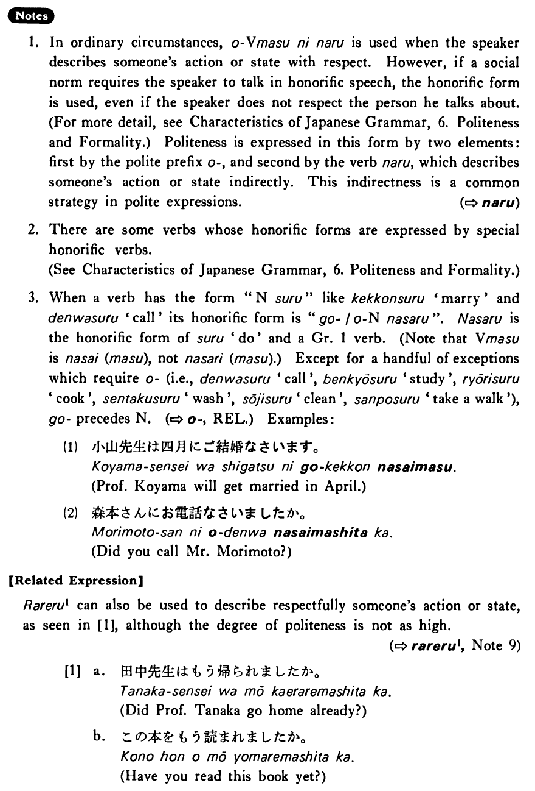

←
DoJG
→
お～になる
(B. 358)
Example sentences
(ks).
田中先生はもう
お
帰り
になった・なりました
。
Professor Tanaka already went home.
(a).
この本をもう
お
読み
になりました
か。
Have you read this book yet?
(b).
グッドマン先生は私の名前を
お
忘れ
になった
。
Professor Goodman has forgotten my name.
Formation
お
Vます
になる
お
話し
になる
Someone (will) talk
お
教え
になる
Someone (will) teach
